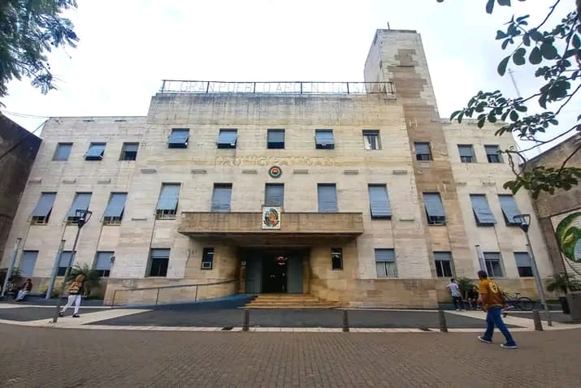
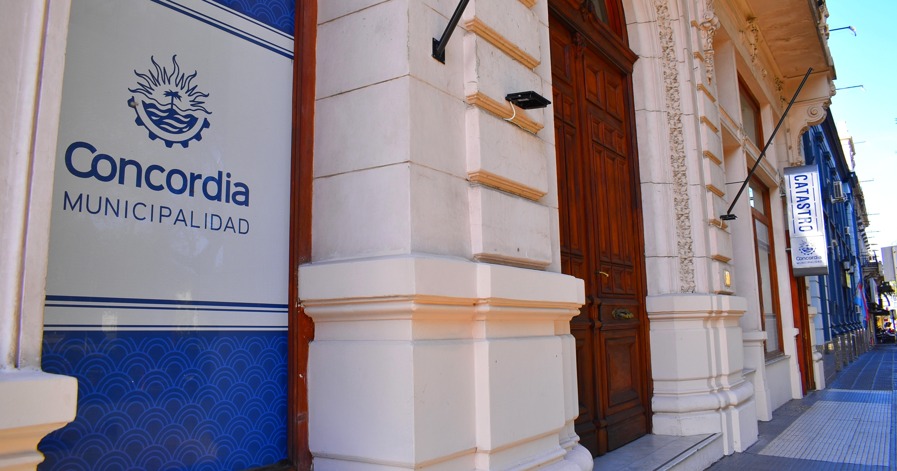

Acerca de la Subsecretaría de Hacienda
Bienvenido a la Subsecretaría de Hacienda, una entidad clave en la Municipalidad de Concordia dedicada a la administración y gestión de los recursos financieros y económicos de la provincia. Nos esforzamos por promover la transparencia, eficiencia y accesibilidad en la gestión de fondos para beneficio de nuestra comunidad.
En nuestra plataforma, encontrarás información detallada sobre diversos aspectos, como subsidios disponibles, detalles de oficinas, beneficiarios y más. Estamos comprometidos con brindarte un acceso fácil a los recursos y fomentar una administración eficaz para el desarrollo sostenible de nuestra región.
